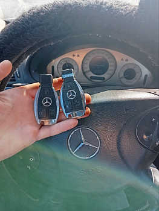

Клонування чіпа авто-ключа в Ужгороді — від 1500 грн

Клонування — це створення точної копії чіпа авто-ключа без підключення до автомобіля. Працюємо тільки з оригінальним ключем і заготовкою — копіюємо дані з одного чіпа на інший. Для авто клон невідрізнимий від оригіналу, тому прив'язка через OBD не потрібна. Це швидко, недорого і не залишає сліду в пам'яті іммобілайзера. Клонуємо чіпи Texas 4C, 4D, Philips ID33-ID46, частково Megamos ID48 — для всіх масових авто 1996-2014 років.
Потрібна копія робочого ключа?
Заїжджайте — клонуємо за 30 хвилин, без втручання в авто
Чим клонування краще за програмування
- Не потрібне авто — клонуємо чіп на робочому столі, авто може стояти вдома
- Дешевше — від 1500 грн проти 2200-3500 за програмування
- Швидше — 15-30 хвилин замість 1-2 годин
- Без сліду в авто — іммобілайзер не «бачить» що ключів стало більше
- Підходить як резервний ключ — нікуди не дінеться при заміні блока
Які чіпи клонуються
| Тип чіпа | Авто | Ціна |
|---|---|---|
| Texas 4C | Toyota до 2004, Ford, Honda до 2007, Lexus | від 1500 грн |
| Texas 4D60 | Ford, Mazda старі | від 1500 грн |
| Texas 4D63 (40-bit) | Mazda, Ford, Lincoln до 2010 | від 1700 грн |
| Texas 4D63 (80-bit) | Mazda 6 GH, Ford Focus 3, Honda Civic 9 | від 1900 грн |
| Texas 4D70, 4D72 | Toyota середніх років | від 1800 грн |
| Philips ID33 | Ford, Mazda старі | від 1500 грн |
| Philips ID40 | Opel Astra G/H, Corsa C, Vectra B/C | від 1500 грн |
| Philips ID42 / ID44 | VW, Audi, Skoda до 2002 | від 1600 грн |
| Philips ID45 / ID46 (PCF7936) | Renault, Hyundai, Kia, Mazda, Fiat, Mitsubishi | від 1700 грн |
| Megamos ID48 (з калькуляцією) | VW, Audi, Skoda, Seat до 2013 | від 2500 грн |
Які чіпи НЕ клонуються
- Megamos AES (VW, Audi, Skoda MQB з 2013) — нове AES-128 шифрування
- DST-AES / H-chip (Toyota, Lexus з 2014) — AES захист
- HITAG-Pro (Ford нові, Mazda з 2014) — індивідуальні ключі
- HITAG-AES (Hyundai, Kia нові, BMW FEM) — AES захист
- BMW CAS3+/CAS4/CAS4+, FEM/BDC — індивідуальні
- Mercedes-Benz FBS3, FBS4 — індивідуальні
Для цих чіпів потрібне повне програмування через OBD або зняття блоку — клонування неможливе технічно. Дивіться прописку ключа.
Як ми клонуємо чіп
- Зчитуємо дані з оригінального чіпа на спеціальному обладнанні (Xhorse VVDI, Lonsdor LT20, Tango)
- Для деяких чіпів (4D, ID48) потрібна додаткова калькуляція ключа — займає 5-15 хвилин
- Записуємо отримані дані на чіп-заготовку (TPX, CN1-CN5, YS-01 або нативну)
- Встановлюємо клонований чіп у головку нового ключа
- Перевіряємо роботу — заводимо ваше авто новим ключем
Часті запитання
Чим клонування відрізняється від програмування?
Клонування — це створення повної копії чіпа без підключення до авто. Прив'язка не потрібна — для авто новий чіп виглядає ідентично оригіналу. Програмування — це запис нового ключа у пам'ять іммобілайзера, авто «бачить» два різні ключі.
Які чіпи можна клонувати?
Texas 4C, 4D60, 4D63, 4D70, 4D72, Philips ID33, ID40, ID41, ID42, ID44, ID45, ID46, частково ID48 (Megamos). НЕ клонуються: Megamos AES (нові VAG з 2013), DST-AES (H-chip Toyota/Lexus з 2014), HITAG-Pro і HITAG-AES.
Чи буде клон працювати назавжди?
Так. Клонований чіп — це точна копія оригіналу на бітовому рівні, авто його сприймає як основний. Жодних обмежень за часом.
Чи можна клонувати ключ без приходу з авто?
Так, потрібен лише сам робочий ключ. Авто залишається вдома. Це головна перевага клонування над програмуванням.
Не знаєте чи можна клонувати ваш ключ?
Назвіть марку, модель і рік — підкажемо одразу